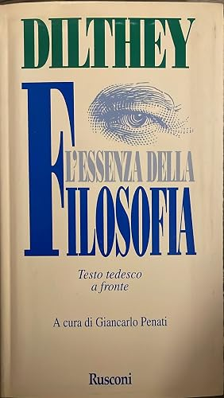
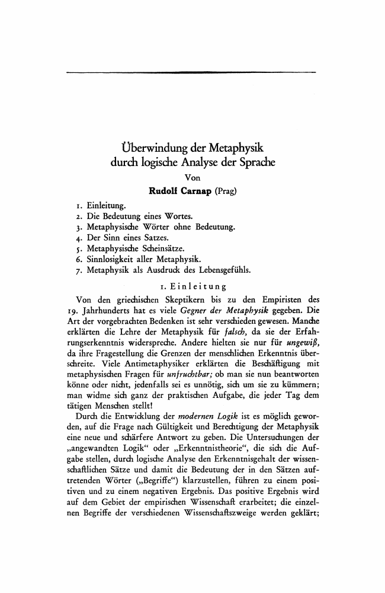
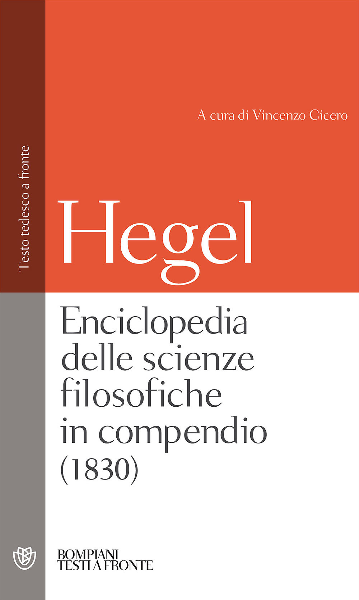

23:29 · 10 OPERE
Le mutande di Wittgenstein
Il filo del discorso
Il confronto fra Socrate e Wittgenstein introduce una riflessione sui limiti e sui compiti della filosofia. Dr Divago parte dal Fedro e accosta il dialogo fra uomini a un’interpretazione dell’inizio della Genesi. Discute poi la proposizione conclusiva del Tractatus e contesta la lettura di Wittgenstein come figura socratica. La biografia di Ray Monk accompagna il passaggio ai rapporti con lo scetticismo, Dilthey e Carnap e alla distinzione fra proposizioni filosofiche e dimostrazioni. Il confronto con Schopenhauer e con l’Etica di Spinoza conduce infine a un passo dell’Enciclopedia di Hegel. Il titolo provocatorio del video introduce dunque una critica del metodo e della ricezione culturale, non un resoconto su oggetti personali del filosofo.
I libri nel discorso

Fedro
Copertina: BUR · 2006 · a cura di Roberto Velardi
Immagine autentica dell’opera, controllata visivamente; l’edizione di riferimento non è attribuita al filmato.
Fedro è annunciato prima del richiamo a Socrate che impara dagli uomini e non dagli alberi.
Passaggio 0:17 ↗ · Fonti e libro ↗
Genesi
Copertina: Einaudi, I libri della Bibbia / Einaudi Tascabili, 2000; introduzione di Steven Rose
Copertina dell’edizione autonoma Genesi, nella serie I libri della Bibbia, con introduzione di Steven Rose. Edizione scelta come riferimento iconografico; nessuna edizione è confermata nel video.
Il libro della Genesi è nominato e discusso attraverso il suo inizio ebraico.
Passaggio 3:05 ↗ · Fonti e libro ↗
Tractatus logico-philosophicus
Copertina del volume che comprende il Tractatus: Einaudi · Tractatus logico-philosophicus e Quaderni 1914–1916 · 2009
Copertina del volume Einaudi che comprende sia il Tractatus sia i Quaderni 1914–1916. La voce identifica il Tractatus; l’ISBN appartiene al volume contenitore e l’edizione non è accertata nel filmato.
Wittgenstein e Tractatus logico-philosophicus annunciati prima della proposizione conclusiva.
Passaggio 7:32 ↗ · Fonti e libro ↗Wittgenstein. Il dovere del genio
Copertina: Bompiani · tascabile · 2000
Immagine autentica dell’opera, controllata visivamente; l’edizione di riferimento non è attribuita al filmato.
Ray Monk e la biografia Il dovere del genio sono annunciati, con titolo italiano approssimato nel parlato.
Passaggio 10:57 ↗ · Fonti e libro ↗
L’essenza della filosofia
Copertina: Rusconi · Testi a fronte · edizione di riferimento
Copertina autentica controllata visivamente. Edizione di riferimento; non identifica l’esemplare usato o citato nel video.
Dilthey e L’essenza della filosofia sono annunciati nella lettura di un passaggio.
Passaggio 13:15 ↗ · Fonti e libro ↗
Überwindung der Metaphysik durch logische Analyse der Sprache (Il superamento della metafisica mediante l’analisi logica del linguaggio)
Prima pagina dell’articolo filosofico: Erkenntnis · volume 2, pp. 219–241 · 1931
Prima pagina autentica dell’articolo di Carnap, riprodotta dal PDF universitario. Non è una copertina di libro e non rappresenta la scheda commerciale JSTOR.
Rudolf Carnap e il titolo tedesco dell’articolo sono pronunciati.
Passaggio 13:58 ↗ · Fonti e libro ↗Ricerche filosofiche
Copertina: Einaudi · Piccola Biblioteca 438 · 2009 · a cura di Mario Trinchero
Immagine autentica dell’opera, controllata visivamente; l’edizione di riferimento non è attribuita al filmato.
Philosophische Untersuchungen e la pubblicazione nel 1953 sono richiamate.
Passaggio 14:23 ↗ · Fonti e libro ↗
Il mondo come volontà e rappresentazione
Copertina: Newton Compton · edizione di riferimento
Il mondo come volontà e rappresentazione e la sua frase iniziale sono richiamati esplicitamente.
Passaggio 17:21 ↗ · Fonti e libro ↗
Etica
Copertina: Laterza · Biblioteca Filosofica · 2009 · traduzione di Sergio Landucci
Immagine autentica dell’opera, controllata visivamente; l’edizione di riferimento non è attribuita al filmato.
L’Etica di Spinoza e il metodo geometrico sono annunciati nel confronto fra forme espositive.
Passaggio 18:12 ↗ · Fonti e libro ↗
Enciclopedia delle scienze filosofiche in compendio (1830)
Copertina: Bompiani · 2000 · testo del 1830, a cura di Vincenzo Cicero
Immagine autentica dell’opera, controllata visivamente; l’edizione di riferimento non è attribuita al filmato.
Hegel ed Enciclopedia delle scienze filosofiche sono nominati prima dell’esempio sul colpo di pistola.
Passaggio 21:28 ↗ · Fonti e libro ↗